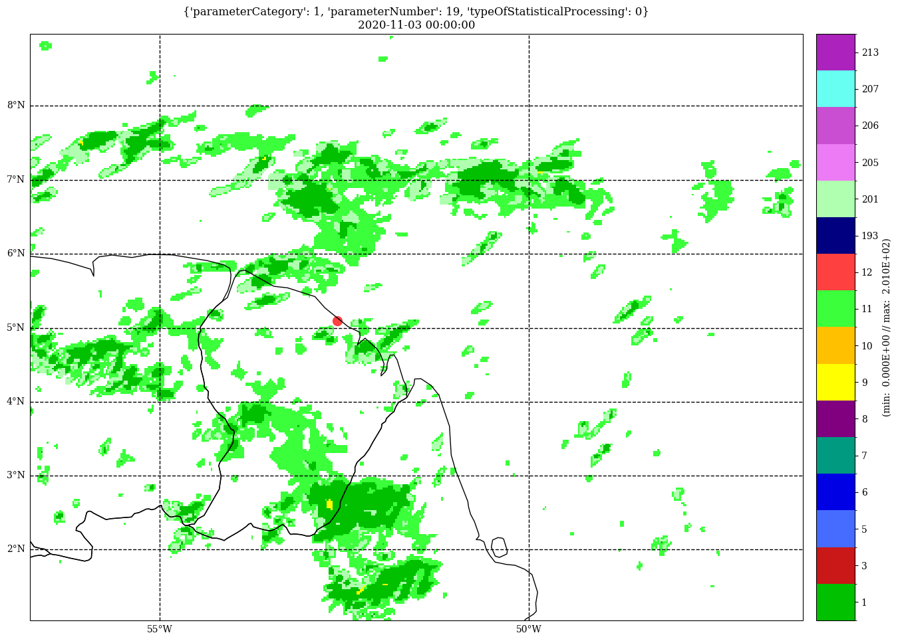

Superpose an observation point on a H2D plot¶
[1]:
%matplotlib inline
# for figures in notebook
# import & initialize epygram
import epygram
epygram.init_env()
import os
INPUTS_DIR = os.path.join('..', 'inputs')
# [2025/04/09-10:46:46][epygram.formats][<module>:0072][INFO]: Format: HDF5SAF is deactivated at runtime (Error: No module named 'h5py'). Please deactivate from config.implemented_formats or fix error.
# [2025/04/09-10:46:46][falfilfa4py][init_env:0087][WARNING]: ECCODES_DEFINITION_PATH env var is defined: may result in unexpected issues if not consistent with linked eccodes library
[2]:
r = epygram.open(os.path.join(INPUTS_DIR, 'grid.arome-forecast.guyane0025+0024:00.grib'), 'r')
[3]:
f = r.readfield('shortName:2r')
[4]:
import cartopy.crs as ccrs
lonlat_crs = ccrs.PlateCarree()
station = (-52.6, 5.1)
value = 60.
[5]:
fig, ax = f.cartoplot(colormap='viridis_r')
x, y = ax.projection.transform_point(*station, lonlat_crs)
ax.scatter(x, y, s=100, c='k')
ax.text(x, y, ' Kourou', size=20)
[5]:
Text(-119538.84270720901, 567864.880456437, ' Kourou')
Now if we want the color of the obs point to match the colormap of the field:¶
[6]:
# for that we need arrays
import numpy as np
lons = np.array([station[0]])
lats = np.array([station[1]])
values = np.array([value])
[7]:
fig, ax = f.cartoplot(colormap='viridis_r')
xyz = ax.projection.transform_points(lonlat_crs, lons, lats)
x = xyz[..., 0]
y = xyz[..., 1]
ax.scatter(x, y, s=100, c=values, cmap='viridis_r',
vmin=f.data.min(), vmax=f.data.max())
[7]:
<matplotlib.collections.PathCollection at 0x7f90ede46270>
And now if the colormap is complex and needs a ColormapHelper to handle:¶
[8]:
f = r.readfield('parameterCategory:1,parameterNumber:19,typeOfStatisticalProcessing:0')
values = np.array([12]) # the red color in colormap
fig, ax = f.cartoplot(colormap='ptype')
ch = epygram.colormapping.get_ColormapHelper('ptype')
ax.scatter(x, y, s=100, c=values, **ch.kwargs_for_plot('scatter'))
[8]:
<matplotlib.collections.PathCollection at 0x7f90ed5d2150>

[ ]: